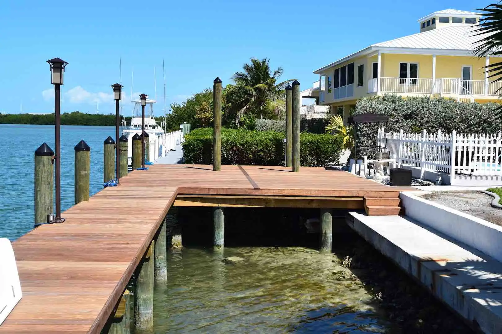

Marinas
Oceans Edge Marina
A full marina rebuild on Stock Island — demolition through finished slips.
Stock Island, Key West
See it on the Marine page
Portfolio
23 projects and 91 photos of marinas, docks, seawalls, buildings and repairs from across the Florida Keys. Select any project to browse its full photo set.
Showing 23 projects · all categories
Marinas
A full marina rebuild on Stock Island — demolition through finished slips.
Stock Island, Key West
See it on the Marine pageMarinas
Structural rehabilitation and pile cap replacement for a working marina.
See it on the Marine pageMarinas
Marina and waterfront stair work at one of the Middle Keys’ best-known resorts.
Duck Key
See it on the Marine pageDocks
A residential dock decked in Ipe, one of the hardest, longest-lasting woods available.
Private residence
See it on the Marine pageDocks
New wood pilings topped with pressure-treated, marine-grade decking.
Private residence
See it on the Marine pageDocks
Evergrain composite decking on PVC piling — no splinters, no staining, no rot.
Private residence
See it on the Marine pageDocks
A low-maintenance composite dock built on PVC pin piles.
Private residence
See it on the Marine pageDocks
A new composite dock at the historic island beneath the Old Seven Mile Bridge.
Pigeon Key
See it on the Marine pageDocks
A steel-reinforced, cast-in-place concrete dock built for maximum service life.
See it on the Marine pageSeawalls
A vinyl-faced seawall with a steel-reinforced concrete core.
See it on the Marine pageMarine repair
Chipping back to sound concrete and rebuilding the section to full strength.
See it on the Marine pageMarine repair
A failing dock bent rebuilt with new structure.
See it on the Marine pageMarine repair
Protective wraps that shield pilings from marine borers and abrasion.
See it on the Marine pageMarine repair
A damaged piling restored to full strength and returned to service.
See it on the Marine pageNew construction
The Eagle Ray Café — foundation, framing and walls — plus work at the Big Tank.
Marathon
See it on the Residential & Commercial pageNew construction
New guest units and a new modular structure for a waterfront resort.
Marathon
See it on the Residential & Commercial pageNew construction
An elevated modular home, set and finished on site.
Private residence
See it on the Residential & Commercial pageRemodeling
A complete kitchen renovation with new cabinetry, counters and appliances.
Private residence
See it on the Residential & Commercial pageFoundations
Formed, reinforced and poured foundations for commercial and residential buildings.
See it on the Residential & Commercial pageStairs
Worn waterfront stairs replaced with a sturdy new build.
Duck Key
See it on the Residential & Commercial pageStairs
Framed and finished exterior stairs for elevated Keys homes.
Private residence
See it on the Residential & Commercial pageADA access
A new accessible ramp at Marathon’s famous sea turtle rescue and rehabilitation center.
Marathon
See it on the Residential & Commercial pageADA access
A narrow walkway widened for accessible passage.
See it on the Residential & Commercial pageStart a project
Every project here started with a conversation. Tell us what you have in mind and we’ll show you how we’d approach it.